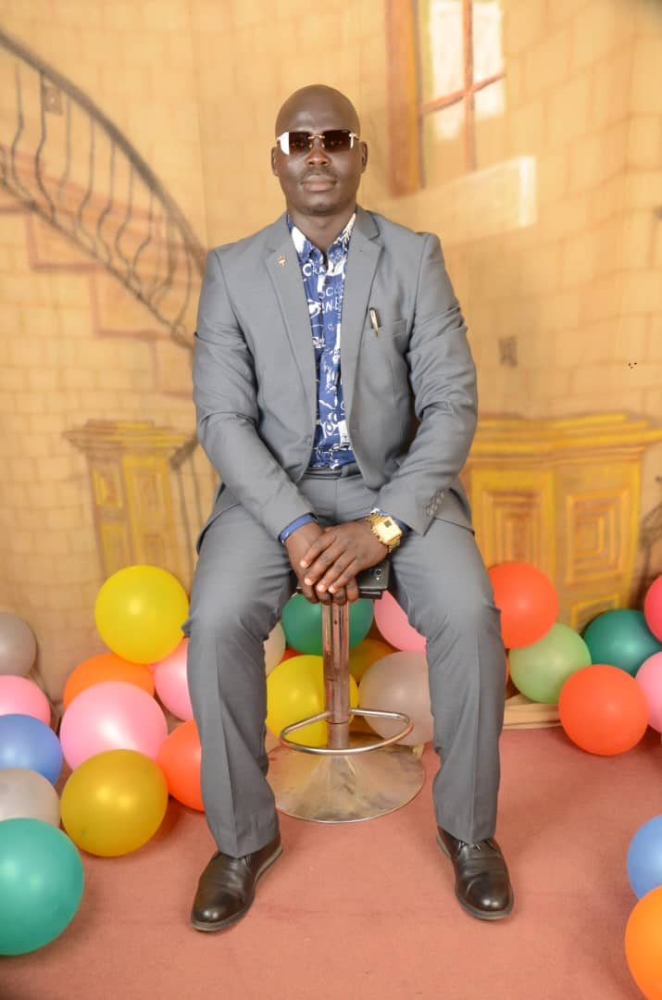

Tadeo Owot | WDD 130
```
Hello! My name is Tadeo Owot, and I am from Jinja, Uganda. I am studying web development and learning how to create accessible, well-designed websites using HTML and CSS.
This page is part of my WDD 130 coursework. I enjoy learning how structure, typography, colour, and images work together to create websites that are useful, attractive, and welcoming.
```